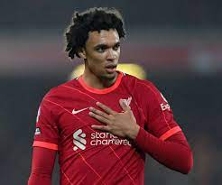

Most Goals Mohamed Salah - 19 Goals Diogo Jota - 12 Goals Sadio Mane - 12 Goals Heung-Min Son - 11 Goals Riyad Mahrez - 10 Goals
Most Assists Trent Alexander-Arnold - 11 Assists Mohamed Salah - 10 Assists Paul Pogba - 9 Assists Andrew Robertson - 9 Assists Jared Bowen - 8 Assists 
Most Clean Sheets Ederson - 15 Clean Sheets Alisson - 14 Clean Sheets Aaron Ramsdale - 11 Clean Sheets Hugo Lloris - 10 Clean Sheets Jose Sa - 10 Clean Sheets